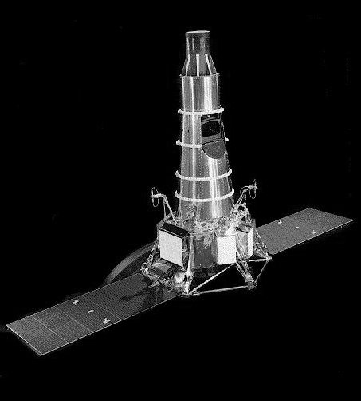
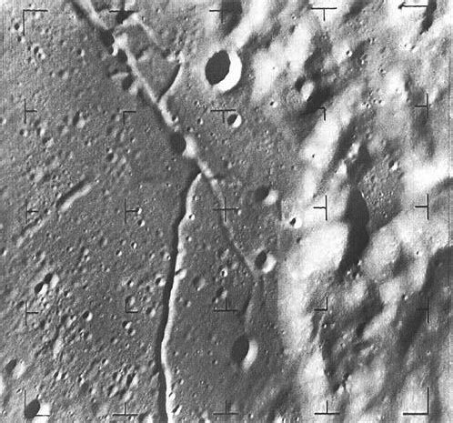
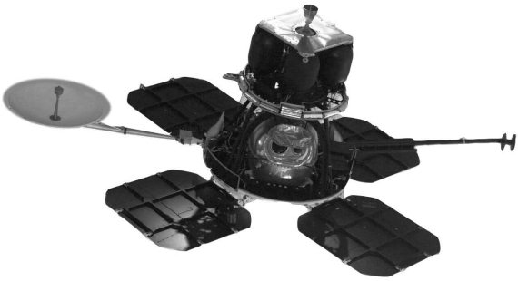
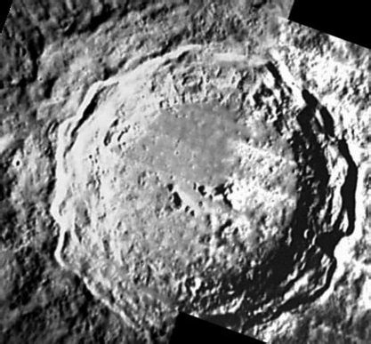
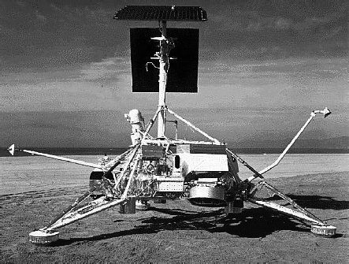
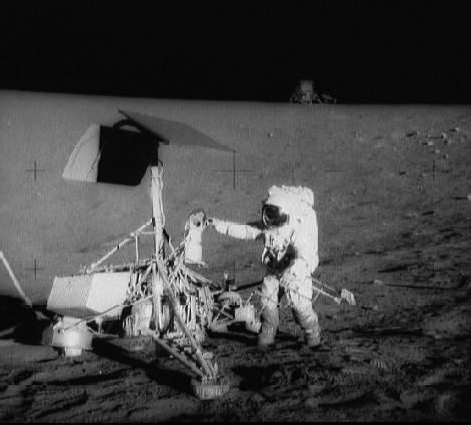

«Рейнджеры», «Сервейоры», «Орбитеры» и прочие
Одним из важных этапов подготовки к высадке на Луне стала организация беспилотных миссий к ночному светилу. Их главной задачей был сбор максимально возможного объема информации о нашем естественном спутнике и окололунном пространстве. Тем самым предполагалось решить, в первую очередь, вопросы безопасности участников лунных экспедиций.
В начале и середине 1960-х годов в США было реализовано три крупных проекта по изучению Луны.
Первая программа, получившая наименование «Рейнджер» (Ranger), предусматривала решение следующих задач: получение телевизионных изображений лунной поверхности, проведение радиолокационного зондирования Луны и изучение свойств ее пород с помощью гамма-спектрометра, доставка на Луну (полужесткая посадка) приборного контейнера с сейсмометром. Мягкая посадка на лунную поверхность не предусматривалась.
Все станции серии «Рейнджер» имели максимальный диаметр 1,52 метра, высоту в сложенном положении 2,52 метра, высоту в развернутом положении 3,12 метра. Максимальный поперечный размер достигал величины 5,18 метра. Масса станций варьировалась от 306 килограммов («Рейнджер-1») до 367 килограммов («Рейнджер-9»).
Реализация этой программы началась еще до появления лунной программы США и первоначально предусматривала проведение пяти полетов: двух испытательных и трех эксплуатационных. Когда же высадка на лунную поверхность стала национальной целью США, число таких полетов было увеличено.
«Рейнджер-1» и «Рейнджер-2» были первыми базовыми космическими станциями, предназначенными для технических исследований и измерений в окружающем пространстве на высоких околоземных орбитах. Их запуски состоялись соответственно 23 августа и 18 ноября 1961 года, но были неудачными – не произошло повторное включение двигателей верхних ступеней ракет-носителей, и аппараты были выведены на низкие орбиты с малым временем существования. Тем не менее полеты позволили получить некоторую научную и техническую информацию.

Станция «Рейнджер-7»
Следующие станции серии были оснащены тормозными двигателями, которые, как полагали, позволят доставить на поверхность Луны сейсмометр, рассчитанный на жесткую посадку. После удара прибор должен был самостоятельно прийти в рабочее состояние и передавать информацию о сейсмических характеристиках и падении метеоритов в течение последующих 60–90 суток. Естественно, в ходе полетов предполагалось решить и остальные задачи программы.
Первые пуски модифицированных станций также оказались неудачными. Трудности возникли уже на начальных этапах полетов.
При запуске «Рейнджера-3», который состоялся 26 января 1962 года, ракета-носитель сообщила аппарату избыточную скорость, что сделало невозможной встречу с Луной. Однако все системы аппарата оставались в рабочем состоянии, и был проведен большой объем исследований в полете, включая впервые выполненный промежуточный маневр коррекции орбиты.
Возникли проблемы и с двумя следующими станциями, запущенными 23 апреля и 18 октября 1962 года. На «Рейнджере-4» вышла из строя система управления, что не позволило нормально управлять полетом аппарата. Единственное, что смогли сделать специалисты Лаборатории реактивного движения, это с помощью передатчиков, установленных на посадочной капсуле и используемых в качестве маяков, «заставить» станцию упасть на обратной стороне Луны. И хотя точное место падения так и осталось неизвестным, «Рейнджер-4» стал первым американским аппаратом, достигшим Луны.
Похожие проблемы возникли и на «Рейнджере-5». Им также пришлось управлять через передатчик на посадочной капсуле, но попасть в Луну не удалось – станция прошла на расстоянии 725 километров от лунной поверхности и вышла на гелиоцентрическую орбиту.
После этого полета был проведен тщательный анализ всех систем аппаратов серии «Рейнджер» с целью выявления и модернизации элементов, обладающих недостаточной надежностью, а также резервирования наиболее ответственных элементов, чтобы гарантировать успех последующих запусков. В результате аппараты претерпели еще одну модификацию. В частности, была убрана посадочная капсула, а на ее место установили дополнительно два комплекта по три телевизионные камеры.
Полет «Рейнджера-6», запущенного 30 января 1964 года, протекал в целом нормально. Удалось обеспечить падение аппарата на Луну. Но телесъемка не состоялась. Как выяснилось впоследствии, во время запуска образовалась дуга высокого напряжения, повредившая телевизионную аппаратуру.
К радости конструкторов, три последних полета по программе были полностью успешными.
Станция «Рейнджер-7» стартовала 28 июля 1964 года и спустя трое суток упала на Луне в районе Моря Познания. Камеры на аппарате были включены за 18 минут до столкновения с поверхностью и вели непрерывную телепередачу. На Земле было получено 4308 снимков. Последнее изображение было сделано на высоте 1600 метров и охватывало площадь 30 на 50 километров. На нем были отчетливо видны кратеры диаметром до 1 метра.

Один из снимков, сделаннък «Рейнджером-8»
Запуск «Рейнджера-8» состоялся 17 февраля 1965 года. Спустя 65 часов станция упала на поверхности Луны в районе Моря Спокойствия. В соответствии с программой полета сближение с лунной поверхностью происходило по пологой траектории с углом наклона 42 градуса, чтобы охватить большую площадь. Удалось получить 7137 снимков высокого качества. Даже при значительной боковой составляющей скорости разрешение на последнем изображении было менее 2 метров.
«Рейнджер-9» отправился в полет 21 марта 1965 года. Наведение аппарата производилось на кратер Альфонса диаметром 130 километров. Падение произошло с отклонением в пределах 5 километров от расчетной точки. Было получено 5814 снимков. Разрешение на последнем снимке достигло 0,3 метра.
Тщательный анализ изображений, полученных с борта «Рейнджеров», показал, что «морские» равнины не имеют никаких особенностей, кроме кратеров с ровными краями. Отсутствие валунов, крупных камней и расщелин позволило перейти к следующему этапу изучения Луны – мягкой посадке.
Программа, в рамках которой решалась эта задача, получила название «Сервейор» (Surveyor). Первоначально планировалось изготовить такие аппараты, которые позволяли изучить Луну как с орбиты (орбитальные модули), так и на самой ее поверхности (посадочные модули). Однако в процессе проектирования разработчики столкнулись с рядом трудностей, которые заставили отказаться от комплексного изучения нашего естественного спутника. В результате программа «Сервейор» распалась на две самостоятельные программы: программы мягкой посадки, сохранившей свое первоначальное наименование, и программу изучения лунной поверхности с селеноцентрической орбиты, названной «Лунар Орбитер» (Lunar Orbiter).
Основными задачами полетов «Сервейоров» были: проверка принятых технических решений, отработка методики мягкой посадки на Луну, определение механических характеристик лунного грунта, его химического состава и электромагнитных свойств, а также тепловых условий на лунной поверхности. Кроме того, планировалось получить телевизионные изображения поверхности с целью изучения топографии рельефа и структуры грунта.

Станция «Лунар Орбитер-1»
Конструктивно «Сервейоры» состояли из двигательной (три корректирующих жидкостных ракетных двигателя и тормозной твердотопливный двигатель) и энергетической (солнечная и химическая батареи) установок, радиотехнического оборудования, а также системы управления полетом и ориентации. В состав научного оборудования входили: альфа-анализатор для определения химического состава лунного грунта по отраженному альфа-излучению, ковш-захват для исследования механических характеристик грунта, приборы для обнаружения магнитных веществ в грунте, и телевизионная камера для съемок Луны на участке подлета. Максимальный диаметр всех станций составлял 4,27 метра, высота (при сложенном шасси) около 3 метров. Стартовая масса «Сервейоров» изменялась в пределах от 995 до 1038 килограммов. Масса посадочных модулей варьировалась от 276 до 297 килограммов.
Всего было запущено семь аппаратов серии, не считая макетов, которые опробовались на околоземной орбите.
Первый эксплуатационный аппарат в серии – «Сервейор-1» – был запущен 30 мая 1966 года по траектории прямого выведения. После промежуточной коррекции с помощью управляющих двигателей была проведена подготовка к посадке. Основной тормозной двигатель был включен на расстоянии 75 километров от поверхности Луны и, работая совместно с управляющими двигателями, затормозил аппарат до скорости 70 метров в секунду. После выгорания топлива тяжелый тормозной двигатель был отделен, и на заключительном этапе спуска работали только управляющие двигатели, обеспечив зависание аппарата на высоте 4 метров. С этой высоты «Сервейор-1» опускался в свободном падении при выключенных двигателях, чтобы свести к минимуму загрязнение и разрушение поверхности под действием истекающих газов. Амортизирующие стойки и сминаемые опоры на силовом каркасе смягчили ударную нагрузку.

Снимок кратера Коперник, сделанный «Лунар Орбитером-4»
«Сервейор-1» проработал на Луне около шести недель и передал на Землю уйму ценной информации, в том числе 11 237 снимков (две недели длилась лунная ночь и съемки не проводились), из которых почти все имели высокое разрешение и были выполнены в цвете с использованием светофильтров.
20 сентября 1966 года стартовал «Сервейор-2». В отличие от «собрата», ему не повезло – не включился один из управляющих двигателей, и прилунение было жестким.
Посадка «Сервейора-3», состоявшаяся 19 апреля 1967 года в Океане Бурь, заставила персонал центра управления полетом поволноваться, поскольку лунная поверхность с высоким коэффициентом отражения, очевидно, внесла помехи в работу посадочного радиолокатора. Это привело к двум подскокам аппарата перед отсечкой двигателей, первый раз до 10 метров и второй раз до 3 метров. В течение последующих двух недель лунного дня аппарат передал на Землю 6300 изображений района посадки. Среди них было много фотографий механического ковша-захвата, который погружался в грунт на глубину до 18 сантиметров. Полученная информация показала, что по структуре грунт на лунной поверхности аналогичен мокрому береговому песку на Земле и отвечает требованиям посадки пилотируемого аппарата.

Станция «Сервейор-1»
«Сервейор-4» был потерян 16 июля 1967 года во время попытки прилунения. Произошло это на участке работы тормозного двигателя, когда внезапно прекратились все передачи с борта станции.
Начиная с «Сервейора-5», все аппараты этой серии оснащались альфа-анализаторами, содержащими радиоактивный источник (кюрий-252), для определения химического состава лунного грунта.
«Сервейор-6» после тщательного обзора места посадки был поднят с поверхности Луны с помощью управляющих двигателей, совершил боковой маневр на расстояние 2,5 метра и вновь прилунился для продолжения исследований.
В отличие от предыдущих полетов, проводившихся с целью изучения возможных мест посадки «Аполлонов» в районе экватора, «Сервейор-7» был направлен в точку, расположенную в непосредственной близости от кромки кратера Тихо в южном материковом районе. После неудачной попытки развернуть альфа-анализатор он был принудительно опущен к поверхности с помощью ковша-захвата. С «Сервейора-7» было получено свыше 21 000 изображений; на некоторых из них видны два лазерных луча, сгенерированных станциями на теневой стороне Земли.
В рамках программы «Сервейор» была исследована лунная поверхность в предполагаемых районах посадки кораблей «Аполлон». Было установлено, что она имеет достаточную прочность для посадки лунной кабины корабля. Обзорные телевизионные камеры дали важнейшую информацию, свидетельствующую о малом количестве обломков пород, которые могли бы помешать посадке пилотируемого аппарата.
Последним этапом подготовки к полетам людей на Луну была детальная съемка с орбиты местности в районе лунного экватора. Для этой цели были подготовлены пять искусственных спутников Луны «Лунар Орбитер», каждый из которых был оснащен фотографической системой. Аппараты запускались в период полетов «Сервейоров» и также использовались для выбора мест их посадки.
Масса «Лунар Орбитеров» составляла 386 килограммов. Фотоустановка аппарата массой 68 килограммов состояла из двух фотокамер с разрешающей способностью 1 метр и 8 метров при съемке с высоты 46 километров. С помощью двигательных установок станций проводились промежуточные коррекции траектории их полета к Луне, и обеспечивался переход на окололунную орбиту.

Астронавт Чарльз Конрад на Луне у станции «Сервейор-3»
Начальные эллиптические орбиты обычно имели высоты периселения и апоселения [2]соответственно 200 и 1850 километров. После нескольких суток подготовки к фотосъемке осуществлялось уменьшение высоты периселения до 50 километров. На каждом аппарате имелся запас пленки на 210 кадров. После экспозиции пленка обрабатывалась на борту, негатив считывался, и изображения передавались на Землю каждые 40 минут.
На «Лунар Орбитер-1» с помощью камеры с высоким разрешением были получены непригодные (размытые) фотографии. Камера умеренного разрешения функционировала нормально, и, таким образом, 75 % полетного задания было выполнено: сфотографированы возможные районы посадки корабля «Аполлон» общей площадью свыше 40 тысяч квадратных километров.
При полете «Лунар Орбитер-2» было получено 184 снимка тринадцати возможных мест посадки пилотируемых кораблей, остальные кадры охватывали прилегающие и отдаленные районы.
С помощью аппарата «Лунар Орбитер-3» было получено 182 снимка, после чего отказал двигатель лентопротяжного механизма. В число фотографий входили изображения десяти возможных районов посадки кораблей «Аполлон». На основании этих снимков производился уже не поиск, а выбор места посадки.
Этими исследованиями было завершено выполнение основной задачи программы. Исходя из этого «Лунар Орбитер-4» и «Лунар Орбитер-5» были запущены на приполярные орбиты с целью проведения фотосъемки остальных областей Луны, а также обзора неэкваториальных районов посадки для аппаратов по предполагаемой, но впоследствии отмененной программе «Пост-Аполлон». При полете «Лунар Орбитер-4» было получено лишь 163 снимка, а «Лунар Орбитер-5» – все 213 снимков. Фотографии охватили около 99 % лунной поверхности.
С помощью аппаратов серии «Лунар Орбитер» была также получена информация о микрометеоритной и радиационной обстановке, а слежение за их орбитами позволило составить подробную карту гравитационного поля Луны.
После того как «отлетали» «Сервейоры» и «Лунар Орбитеры», планировалось перейти к пилотируемым полетам к Луне. Но сразу сделать это не удалось.